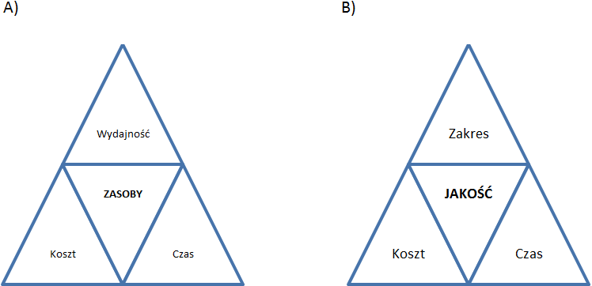
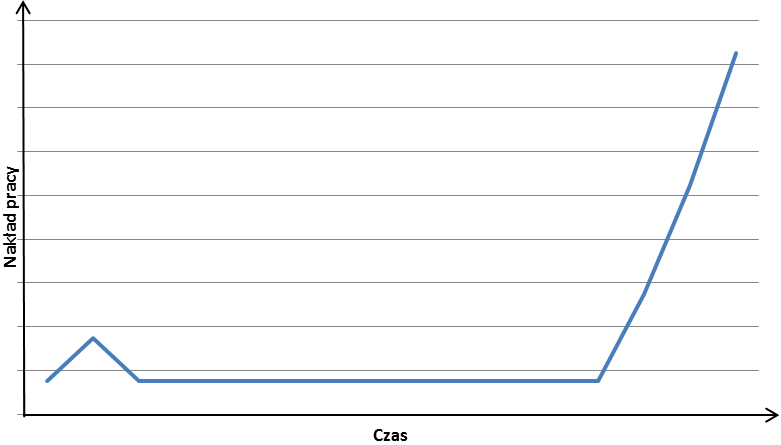
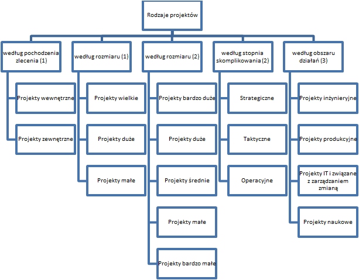

Pojęcie projektu stosowane jest obecnie dość intuicyjnie i powszechnie, co wbrew pozorom nie ułatwia jednoznacznej definicji. Projektem można określić dokument zawierający wskazówki wykonania jakiegoś obiektu, wstępną wersję urządzenia czy też plan działania. [1] Pojęcie projektu można również rozumieć szerzej, jako synonim słowa mniej popularnego, jednakże pochodzenia polskiego. Przedsięwzięcie, bo o tym słowie mowa, jest to działanie podjęte w jakimś celu. [2] Celowość projektu podkreśla definicja projektu przedstawiona przez K. Frączkowskiego:
Projekt jest to przedsięwzięcie, na które składa się zespół czynności, które są charakterystyczne przez to, że mają datę rozpoczęcia, specyficzne cele i limity, ustalone odpowiedzialności (obowiązki) realizatorów, budżet, rozkład czynności oraz datę ich ukończenia. [3 s.11]
Tę cechę projektu wyróżnia również G.D. Oberlander, który określa projekt jako działanie podejmowane dla spowodowania rezultatów oczekiwanych przez stronę zamawiającą. [4 s.5-4] M. Pawlak podobnie wskazuje na to, że jedną z charakterystyk projektu jest to, że w trakcie jego realizacji ma zostać osiągnięty konkretny cel. [5 s.17] Przy czym cel ten może być interpretowany jako spełnienie oczekiwań zamawiającego (za G.D. Oberlander), nowy produkt, urządzenie (za M. Pawlak), czy też realizacja szerszego programu (za A. Matczewski) lub systemu (za M. Pawlak).
Wspomniany A. Matczewski definiuje projekt jako działanie jednorazowe. [6 s.455] K. Frączkowski również zakłada, że projekt jest działaniem nowym, nie mającym wzorca i nie realizowanym wcześniej. [3 s.11] Unikalność projektu sprawia, że zdobyte w trakcie jego realizacji doświadczenie nie może zostać przy okazji kolejnego projektu powielone w formie tych samych czynności, ale stanowi wsparcie w prognozowaniu i podejmowaniu decyzji. Dodatkowo ograniczenie to niejako wymusza kreatywne i innowacyjne podejście do każdego nowego projektu i problemów pojawiających się w trakcie jego realizacji. Przy czym niepowtarzalność projektu dotyczy nie tylko sposobu realizacji, ale również produktu czy usługi, która powstaje w jego rezultacie. [7 s.4] Czynności w projekcie, jak i jego efekt są unikalne, ale również niepewne, co do swojej ostatecznej postaci. Na szczęście ta niepewność i związane z nią ryzyko zazwyczaj zmniejszają się wraz z postępem prac. [8 s.11, 5 s.18]
Większość autorów definiując projekt podkreśla jego złożoność. Przyjmując jednak za definicją PMI, że projekt może być bardziej (projetky realizowane dla setki osób w czasie przekraczającym nawet dziesięć milionów godzin) jak i mniej rozbudowany (projekty realizowane przez jedną osobę w czasie krótszym niż sto godzin), [7 s.4] złożoność tę należy rozumieć jako: [5 s.18]
Autorzy podejmujący się objaśnienia pojęcia projektu wskazują również na to, że jest to działanie jasno określone przy czym jest to określenie przede wszytkim w zakresie czasu jak i kosztów. I tak według M. Pawlaka projekt ma określony termin rozpoczecia i zakończenia, a także określone fazy, [5 s.17] a według K. Kukuły projekt jest to działanie zawarte w skończonym przedziale czasu, z wyróżnionym początkiem i końcem. [9 s.176] Jak wspomniano, autorzy, jak na przykład B. Grupp, dowodzą, że koszty projektu dają się wyliczyć i oszacować, [10 s.18] przy czym koszt projektu często jest wartością narzuconą przez sponsora projektu, a nie wynikową. Ponadto może on znacząco wzrosnąć w przypadku zagróżenia terminu, który musi zostać zrealizowany. [5 s.18] Zależność ta jest dwustronna, ponieważ koszt projektu może być mniejszy, jeśli termin realizacji jest odpowiednio oddalony w czasie. Należy jednak pamiętać, aby oddalony termin realizacji nie interpretować, jako większej liczby godzin poświęconej na projekt, a jako inne, bardziej równomierne rozłożenie czasu pracy.
Przedstawione wyżej definicje różnych autorów charakteryzują się elementami wspólnymi, które stanowią podstawę do wyróżnienia głównych cech projektów:
Przy czym każda z tych cech wymaga komentarza, w związku z czym ich zrozumienie wymaga zapoznania się z kontekstem przedstawionym powyżej.
Wracając jednak do rozważań odnośnie zależności między czasem i kosztem projektu warto dodać, a wręcz nie można nie wspomnieć, że stanowią one głowne elementy trójkąta zależności czy też ograniczeń projektu, który został rozpowszechniony przez Harolda Kerznera za sprawą jego pracy zatytułowanej Project Management: A Systems Approach to Planning, Scheduling, and Controlling (Zarządzanie projektami: systemowe podejście do planowania, tworzenia harmonogramów i kontrolowania). [11]
Karzner obok czasu i kosztów zdefiniował zmienną wydajności. Według niego istotą zarządzania projektemi jest kontrola zasobów w kontekście tych trzech zmiennych. Przy stałych zasobach niemożliwym jest zmienienie jednego z parametrów bez zmiany co najmniej jednego, innego parametru. Przy czym zmainy te wynikają z charakteru projektu i są jego naturalną częścią. [12 s.625-626]
Współcześnie występuje kilka różnych aczkolwiek zbliżonych wariacji trójkąta projektu. Jedną z nich przedstawiono poniżej. W porównaniu z trójkątem Kerznera zamiast wydajności pojawia się zakres projektu, a zasoby zastąpione zostały przez jakość. Prawdopodobnie taka zmiana nastąpiła na skutek większych możliwości wpływania na zakres i jakość niż wydajność i zasoby.
Rys. 1.2.1 Trójkąt ograniczeń projektu
Zakres projektu jest to suma wszystkich produktów projektu. Poprzez produkty projektu należy rozumieć produkt główny projektu, np. system informatyczny, produkty dodatkowe, np. dokumentacja użytkowa oraz produkty pośrednie (wewnętrzne), np. analiza wymagań. Zakres projektu to również suma wszystkich prac, które należy wykonać, aby w rezultacie uzyskać produkt główny. W związku z tym rolą koordynatora projektu z jednej strony jest dopilnować, aby zespół projektowy wykonał wszystkie przewidziane prace, a z drugiej, żeby nie wykonywał dodatkowych, nieuzgodnionych wcześniej prac. Naciski na zwiększenie zakresu prac mogą się pojawiać za równo ze strony klienta, jak i zespołu projektowego. [13 s.31-34]
Koszty projektu powinny być określane przez wykonawców czynności w projekcie, ekspertów. Proces wyceny projektu może się odbywać z góry na dół (Top-Down) na podstawie innych projektów i wiedzy ekspertów. Jest to tak zwana metoda porównawcza. Wycena może sie również odbywać z dołu na górę (Bottom-Up), gdzie to wykonawcy szacują wartość swojej pracy, a następnie wartości te są sumowane. Pierwsza metoda jest szybka, ale niedokładna. Druga z kolei jest dokładna, ale czasochłonna, a przez to droga. Kolejna, trzecia metoda wyceny projektu opiera się o modele matematyczne. Jest ona za równo szybka, jak i niedroga, ale jej dokładność zależy od wiarygodności algorytmów i danych źródłowych. Jest to tak zwana metoda parametryczna. Koszty projektu raz ustanowione, mogą w toku realizacji projektu zostać zmienione tylko w wyniku wprowadzenia zaaprobowanych zmian w projekcie. [13 s.35-38]
Czas realizacji projektu podobnie jak koszty może być oszacowany jedną z trzech metod: oddolnie, odgórnie lub poprzez oszacowanie parametryczne. Podobieństwo metod wyceny jest nieprzypadkowe. Bardzo często największym kosztem projektu jest nakład pracy w czasie – roboczogodziny. Szacunkowy czas całego projektu powinien uwzględniać rezerwy. Zdecydowanie lepiej jest ustanowić procentową rezerwę czasu dla całego projektu niż pojedynczych zadań. Jeśli rezerwa zostałaby ustanowiona dla pojedynczego zadania, a nie wykorzystana, wówczas zespół projektowy mógłby odnieść mylne wrażenie, że wyprzedzają harmonogram i zwolnić tempo pracy. W sytuacji przekroczenia rezerwy dla pojedynczego zadania zespół mógłby uznać, że nie uda się im dotrzymać końcowego terminu, co nie musi być prawdą, jeśli w innym zadaniu rezerwa nie zostanie w pełni wykorzystana. Te dwie sytuacje potwierdzają stwierdzenie, że lepiej jest ustanowić rezerwę dla całego projektu. Takie rozwiązanie pozwala lepiej zarządzać czasem projektu. Poza wymienionymi dwoma sytuacjami, w przypadku doliczania rezerwy czasowej do pojedynczego zadania może dojść do obniżenia wydajności zespołu, który będzie czuł, że może sobie na to pozwolić, skoro na dane zadanie przeznaczono więcej czasu. Szacując czas projektu należy również pamiętać o innych mechanizmach, które wpływają na wydajność zespołu projektowego w czasie. Na przykład syndrom studenta, który mówi o tym, że pracownicy mają tendencję do wzmożonej pracy nad swoim zadaniem tuż po jego zleceniu oraz tuż przed terminem realizacji, kiedy to w wykonują znaczącą większość pracy.
Rys. 1.2.2 Nakład pracy w stosunku do czasu projektu prezentujący symdrom studenta
Wartość procentowej rezerwy czasowej dla całego projektu powinna być uzależniona od złożoności projektu i doświadczenia zespołu. Jeśli projekt jest złożony i dodatkowo wykonywany przez zespół po raz pierwszy rezerwa czasowa może wynosić nawet 50%.
Szacunkowe czasy poszczególnych zadań w projekcie należy weryfikować z rzeczywistością. W przypadku zaobserwowania wyraźnego odchylenia należy planować rozwiązania naprawcze, które w przypadku jeszcze większego zwiększenia odchylenia należy wdrożyć. Osiagnięte rzeczywiste czasy zadań warto archiwizować na poczet wyceny czasowej przyszłych projektów. [14]
Kombinacja zakresu projektu, jego kosztu i czasu stanowi o jakości projektu.
Aby zakończyć rozważania nad definicją i cechami projektu i móc przejść do rodzajów projektów, warto również zapoznać się z różnicami między pojęciami definicyjnie zbliżonymi jak proces i program.
Proces jest to ciąg określonych czynności zaprojektowanych tak, aby w ich wyniku powstawały identyczne lub zbliżone produkty oraz usługi. Procesy służą stabilizacji i optymalizacji działania organizacji. [3 s.15]
Jak wspomniano wcześniej celem projektu jest stworzenie czegoś wyjątkowego, niepowtarzalnego, co determinuje również sposób pracy jako innowacyjny i wymagający kreatywności. Proces natomiast prowadzi do wytworzenia zdefiniowanych produktów lub usług w powtarzalny, określony sposób (opracowany na podstawie zrealizowanego wcześniej projektu). To, co łączy projekty i procesy to potrzeba ich modyfikacji w czasie. Różnice jednak występują w metodzie wprowadzania zmian. Zmiany w procesach wprowadzane są sukcesywnie w długim okresie czasu. Zmiany w projektach są zazwyczaj gruntowne i wiążą się z dużym ryzykiem. Rezultatem przedstawionych różnic jest również odmienna rola kieronika. W procesach kierownik ingeruje w przypadkach odbiegających od normy, np. spadek wydajności, czy też zatrzymanie produkcji w skutek niecodziennej sytuacji. Kierownik projektu musi natomiast na bieżąco wspierać zespół projektowy w rozwiązywaniu niecodziennych sytuacji, które właściwie stanowią codzienność pracy projektowej. [3 s.15-16]
Tab. 1.2.1 Różnice między projektem a procesem
|
PROJEKT |
PROCES |
|
|
REZULTAT |
Coś nowego, niepowtarzalnego |
Jasno zdefiniowany produkt lub usługa |
|
SPOSÓB WYTWARZANIA |
Kreatywność, Innowacyjność |
Określone, powtarzalne czynności |
|
SPOSÓB WPROWADZANIA ZMIAN |
Zmiany są gruntowne, niekiedy rewolucyjne, obarczone dużym ryzykiem |
Rozłożony w czasie |
|
ROLA KIEROWNIKA |
Musi na bieżąco kontrolować projekt. |
Ingeruje tylko w przypadkach odchyleń rezultatów procesu od normy lub w nietypowych sytuacjach |
Źródło: Opracowanie własne
W rzeczywistości gospodarczej występują za równo organizacje, których działalność ma stricte charakter procesowy, jak i organizacje realizujące projekty, których tylko część obszarów działalności jak na przykład finanse realizowana jest za pomocą procesu. Przykład organizacji realizującej wszystkie swoje działania na zasadach projektowych jest trudno znaleźć, aczkolwiek takie podejście zapewniłoby jej znaczną elastyczność obarczoną jednak dużym ryzykiem. Dla takich organizacji, które do działań bieżących podchodzą projektowo zarezerwowano pojęcie organizacji zarządzanych poprzez projekty. Pojęcia tego nie należy mylić z zarządzaniem projektami. [7 s.6]
Program jest pojęciem nadrzędnym w stosunku do projektu. Charakteryzuje się większymi niż w przypadku projektów kosztami i zakresem, a przez to również ryzykiem. Przeprowadzenie programu w organizacji wiąże sie ze zmianą jej działalności, priorytetów lub ideii. Programy angażują większą liczbę pracowników, którzy też częściej się zmieniają niż w przypadku projektu. Programy są w większym stopniu uwarunkowane politycznie. Trudniej jest dla nich wyznaczyć miary sukcesu. Częściej też kończą się niepowodzeniem. W realizacji programu większym problemem jest utrzymanie motywacji i zaangażowania zespołu oraz wsparcia kierownictwa. Pojęcie programu, gdy jest stosowane równorzędnie z projektem dotyczy najczęściej projektów realizowanych w obszarach niekomercyjnych, np. w administracji publicznej. [10 s.20]
W praktyce projekty różnią się nie tylko od procesów i programów, ale również między sobą. Podziału projektów można dokonać przyjmując różnorakie klucze tegoż podziału. Najbardziej sensownym i praktycznym wydają się podziały ze względu na: pochodzenie zlecenia, rozmiaru, stopnia skomplikowania, obszaru działań.
Tab. 1.2.2 Podział projektów ze względu na rozmiar
|
Wielkość projektu |
Liczebność zespołu projektowego |
Czas trwania (lata na jednego członka zespołu) |
Koszt (mln jednostki pieniężnej) |
|||
|
H.-D. Litke |
M. Pawlak |
H.-D. Litke |
M. Pawlak |
H.-D. Litke |
M. Pawlak |
|
| Bardzo mały |
– |
< 3 |
– |
< 0,4 |
– |
< 0,1 |
| Mały |
< 6 |
3-10 |
< 0,4 |
0,4-5 |
< 0,1 |
0,1-1 |
| Średni |
6-50 |
10-50 |
0,4-50 |
5-50 |
0,1-10 |
1-10 |
| Duży |
> 50 |
50-150 |
> 50 |
50-500 |
> 50 |
10-100 |
| Bardzo duży |
– |
> 150 |
– |
> 500 |
– |
> 100 |
Źródło: Opracowanie własne na podstawie Trocki M.: Zarządzanie projektami. Warszawa. Polskie Wydawnictwo Ekonomiczne. 2009. s.25. oraz Pawlak M.: Zarządzanie projektami. Warszawa. Wydawnictwo naukowe PWN. 2006. s. 20.
Pierwsza cecha różnicująca projekty – pochodzenie zlecenia na przeprowadzenie projektu – pozwala wyróżnić projekty wewnętrzne tj. takie, które wynikają z potrzeb własnych organizacji oraz projekty zewnętrzne tj. takie, które realizowane są na zlecenie klientów przedsiębiorstwa. Projekty wewnętrzne najczęściej relizowane są w celu usprawnienia działalności. W wyniku projektów zewnętrznych najczęściej powstają unikatowe produkty. [10 s.22-23]
Druga cecha różnicująca projekty – rozmiar – według H.-D. Litke powinna być mierzona liczebnością zespołu projektowego, czasem trwania oraz kosztem projektu. Te same kryteria uwzględnia podział według rozmiaru, który przedstawia w swojej książce M. Pawlak. Różnica między podejściami obu autorów tkwi w ilości wyróżnionych grup wielkości projektów i przyjętych wielkościach dla poszczególnych kryteriów.
Tab. 1.2.3 Podział projektów ze względu na skomplikowanie
|
Typ |
Zakres czasu |
Zakres zmian |
Stopień skomplikowania |
Efekt projektu |
Zakres zmian u klienta |
| Strategiczny |
2-5 lat |
duży | duży |
wpływ na organizację i jej otoczenie |
zmiana treści pracy (co) |
| Taktyczny |
1-2 lata |
średni | średni |
wpływ na większość elementów organizacji |
zmiana sposobu pracy (jak) |
| Operacyjny |
do 1 roku |
mały | mały |
wpływ ograniczony do komórki, w ramach której projekt był realizowany |
Zmiana zasobów (przez kogo, kiedy i gdzie praca jest wykonywana) |
Źródło: Pawlak M.: Zarządzanie projektami. Warszawa. Wydawnictwo naukowe PWN. 2006. s. 21.
Poziom skomplikowania podobnie jak kryterium rozmiaru jest funkcją trzech cech/stopni skomplikowania: [5 s.21]
Ze względu na stopień skomplikowania można wyróżnić projekty strategiczne, taktyczne i operacyjne. Ich charakterystykę zawiera tab. 1.2.3.
D. Lock przedstawia cztery typy projektów, za których klucz wyróżnienia uznać można obszar działania oraz efekt projektu. Projekty inżynieryjne, konstrukcyjne, petrochemiczne, górnicze i wydobywcze – pierwszy typ projektów – charakteryzuje wymóg pracy w miejscu ich realizacji, najczęściej oddalonym od siedziby centrali wykonawcy. Związane są z wysokim ryzykiem, dużymi inwestycjami oraz problemami organizacyjnymi w związku z czym wymagają skrupulatnego zarządzania postępami prac, finansami i jakością. Efektem drugiego typu projektów – projektów produkcyjnych – jest konkretny przedmiot/produkt. Projekty tego typu najczęściej realizowane są w firmie lub jej bliskim otoczeniu, co umożliwia bezpośrednią koordynację i kontrolę. Trzeci typ projektów – projekty IT i związane z zarzadzaniem zmianą– są to działania zarządcze mające na celu uzyskanie efektu, którego zasadniczo nie można sklasyfikować jako budowla lub produkt materialny, np. nowy system komputerowy, kampania marketingowa, przygotowanie do targów, raport analityczny. Projekty zarządcze mogą być powiązane lub wręcz uzależnione od projektów typu pierwszego i drugiego. Czwart typ projektów – projekty naukowe – mogą prowadzić do bardzo zyskownych odkryć przy czym niezaleznie od tego, czy ich efekt zostanie uzyskany, pochłaniają ogromne ilości kapitału. Charakteryzuje je bardzo wysoki poziom ryzyka, ponieważ mają na celu poszerzenie wiedzy ludzkości. [8 s.12-14]
Rys. 1.2.3 Klasyfikacja projektów
Przedmiotem niniejszej pracy będą jedynie projekty zewnętrzne; małe i średnie według klasyfikacji H.-D. Litke oraz bardzo małe, małe i średnie według klasyfikacji M. Pawlaka; pod względem stopnia skomplikowania – projekty operacyjne i taktyczne, a pod względem obszaru działania – projekty informatyczne.
[1] sjp.pl: Projekt z dnia 13.11.12
[2] sjp.pl: Przedsięwzięcie z dnia 13.11.12
[3] Frączkowski K.: Zarządzanie projektem informatycznym. (...). Wrocław. Oficyna Wydawnicza Politechniki Wrocławskiej. 2003.
[4] G.D. Oberlander.: Project Management for Engineering and Construction. Boston. McGraw-Hill. 2000.
[5] Pawlak M.: Zarządzanie projektami. Warszawa. Wydawnictwo naukowe PWN. 2006.
[6] Koźmiński A.K., Piotrowski W. (red.): Zarządzanie. Teoria i praktyka. Warszawa. Wydawnictwo naukowe PWN. 2007.
[7] Duncan W.R.: A Guide to the Project Management Body of Knowledge. U.S.A. Project Management Institute. 1996.
[8] Lock D.: Podstawy zarządzania projektami. Warszawa. Poskie Wydawnictwo Ekonomiczne. 2009.
[9] Kukuła K. (red.): Badania operacyjne w przykładach i zadaniach. Warszawa. Wydawnictwo naukowe PWN. 2000.
[10] Trocki M.: Zarządzanie projektami. Warszawa. Polskie Wydawnictwo Ekonomiczne. 2009.
[11] microsoft.com: Krótka historia zarządzania projektami z dnia 05.12.12
[12] Kerzner H.: Project Management: A systems approach to Planning, Scheduling and Controling. USA. Wiley & Sons. 2003.
[13] Kloze M.: Kluczowe aspekty zarządzania projektami. Delloitte. 2009. Prezentacja szkoleniowa Akademii Konsultingu.
[14] mcwolf.net: Szacowanie czasu trwania projektu z dnia 19.01.13